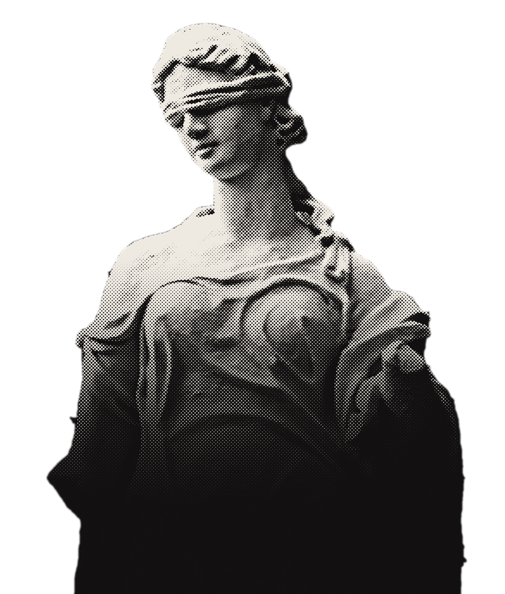

Право

Мастер-класс «Основы трудового права
для успешного трудоустройства»
Суббота
28 ноября
13:25
Аудитория 609
§ Ст. 37 Конституции РФТруд свободен. Каждый имеет право свободно распоряжаться своими способностями к труду
Фемиде
повязка
положена.
Тебе — нет.
Разберём реальные кейсы,
юридические аспекты
работы по найму
и судебную практику
на
Труд
Фемида: фото Breandan Fischer, Wikimedia Commons, CC BY-SA 4.0